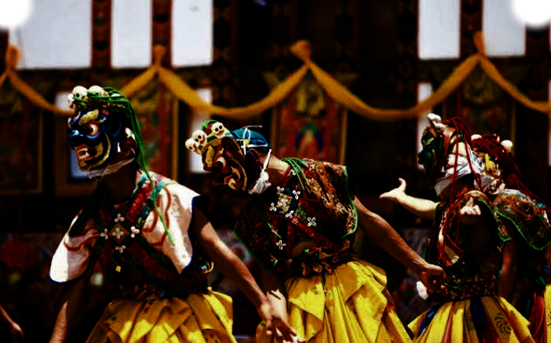

|
♛ T R A S H I G A N G D Z O N G ♛
HISTORICAL HERITAGE OF EASTERN BHUTAN Discover Our History, Culture and Tradition |
| TGANG | DZONG HIS | PICTURE |

A symbol of Bhutanese history, culture and heritage
ABOUT TRASHIGANG DZONGTrashigang Dzong is one of the important historical fortresses of Bhutan. It is located in Trashigang District in eastern Bhutan, overlooking the Drangme Chhu valley. The dzong is known for its traditional Bhutanese architecture, religious importance and role in local administration. It represents the rich cultural identity and heritage of eastern Bhutan. HISTORY OF TRASHIGANG DZONGTrashigang Dzong was built in the 17th century under the leadership of Chögyal Minjur Tenpa. It became an important centre for administration and religion in eastern Bhutan. Over the years, the dzong has remained an important part of the region's history and continues to represent Bhutan's living cultural traditions. ARCHITECTURE AND CULTURETraditional Bhutanese design, whitewashed walls, wooden windows and religious spaces make the dzong an important example of Bhutanese architectural heritage. WHY IS TRASHIGANG DZONG IMPORTANT?
|
BHUTAN TOURISM | DZONGKHA DEVELOPMENT | VIEW MORE ABOUT TRASHIGANG DZONG
Created by Karma Tenzin | Class 9 B
TRASHIGANG DZONG — THE HERITAGE OF EASTERN BHUTAN